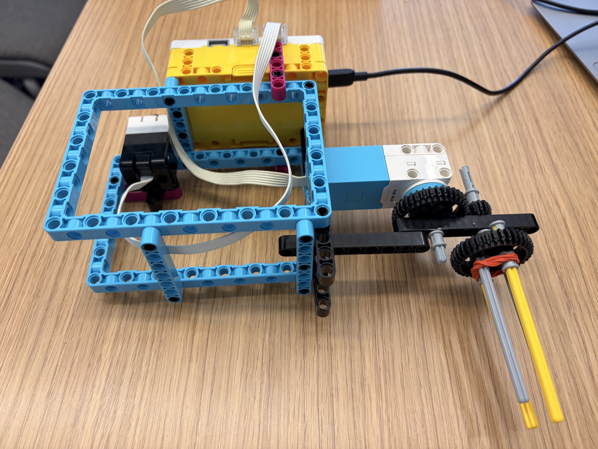
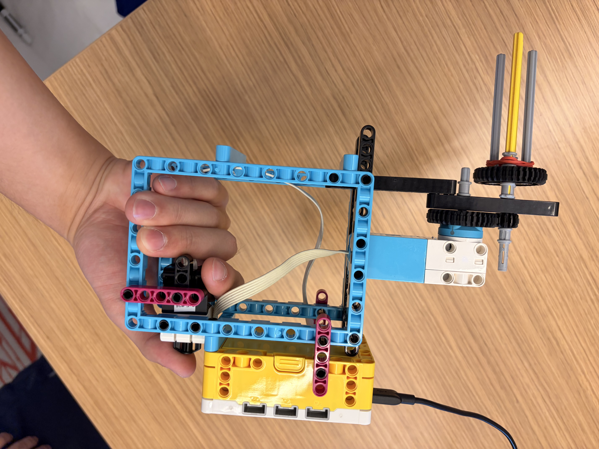
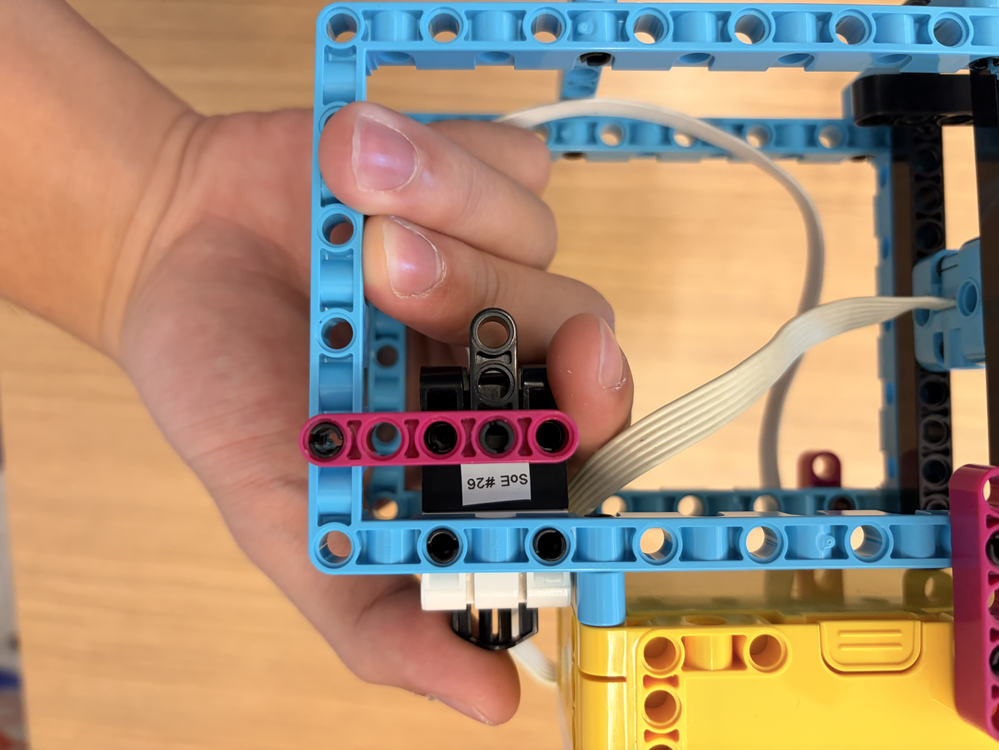
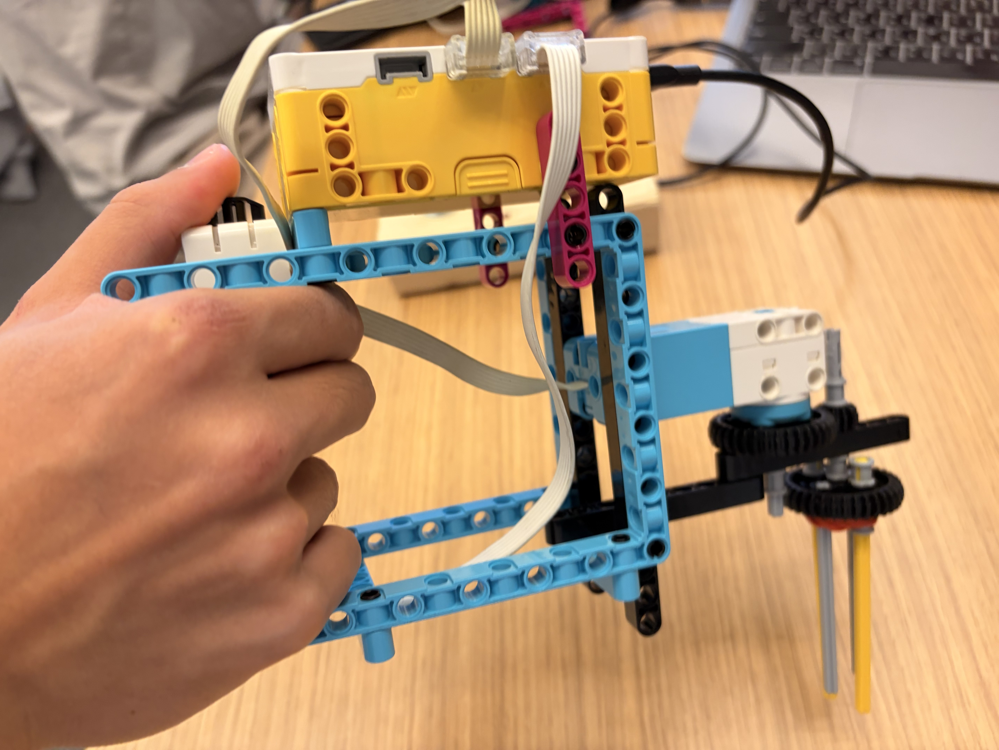
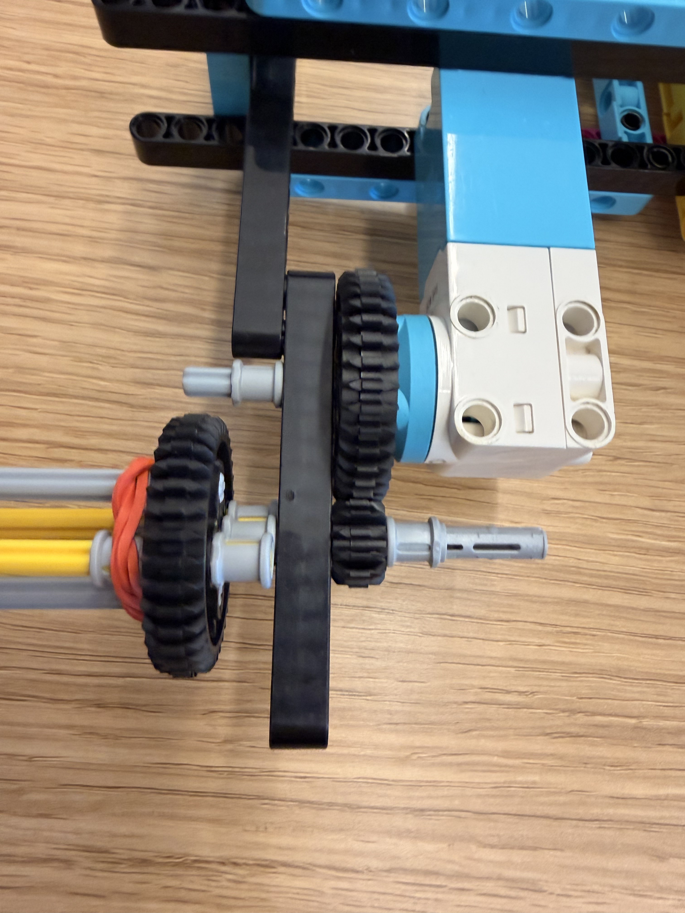
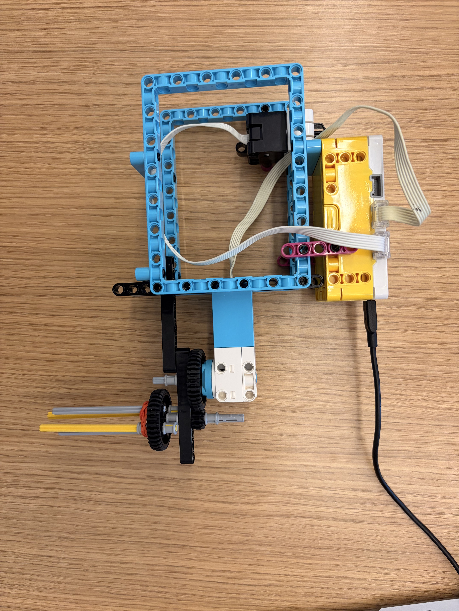

Objective: Create an ergonomic tool that can unscrew and screw two bolts, as shown in the video below.
I incorporated the force sensor and the button on the hub to determine whether to screw up or down. The design also uses a gear train to increase the speed of the screwing, and it is meant to be compatible with both the left and right hand.
One of the most difficult parts was finding a way to make the design ergonomic and compatible with a large glove. All in all, it was a very fun project because we got to discover how to use all the sensors.




